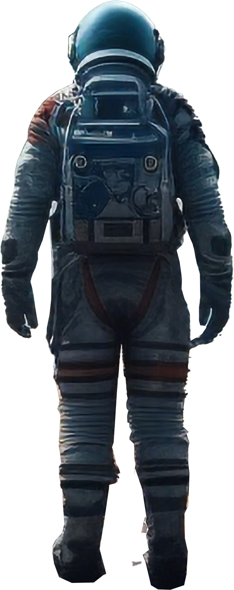
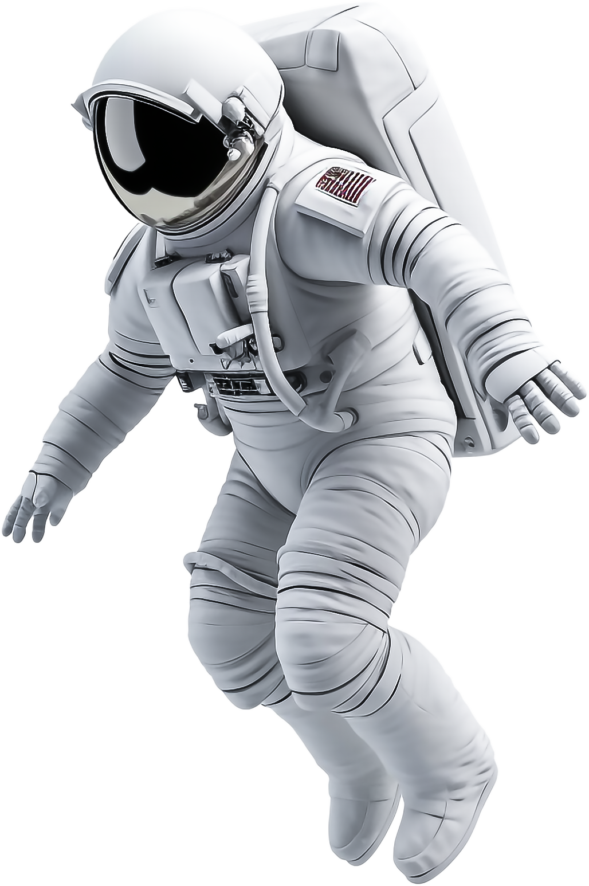

FIRAS
HOME
PROJECTS
SKILLS
ABOUT
CONTACT
FIRAS
UX UI DEIGNER
ALSAM
AREE
 ABOUT
I am a seasoned UX/UI designer with a solid foundation in software engineering, holding a bachelor's degree in the field. With a rich professional journey spanning 10 years,
I bring a unique blend of technical expertise and design sensibility to my work. In addition to my software engineering background, I have accumulated over 13 years of experience in graphic design, further enhancing my ability to create visually appealing and user-friendly interfaces.
My career has been marked by a passion for crafting seamless user experiences, informed by both the principles of software engineering and the aesthetics of graphic design.
I thrive on the intersection of technology and creativity, consistently delivering innovative solutions that marry
form and function.
ENERGY.GOV
PROJECTS
ENERGY.GOV
REBUILDINGTOGETHER.COM
ENERGY.GOV